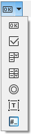

|
Topic |
Item |
Description |
|---|---|---|
|
Generic Settings |
User Level |
You can choose between Default and Advanced. It is recommended to allow only experienced users to operate in the Advanced level. In Advanced level, some additional editors are available. For example, the Communications Network editor in the System editor. Some context menus have additional entries. For example
|
|
Show warning message if resolution is not 96 DPI: |
If True, a message pops up in the Message Log pad. |
|
|
Show Obsolete Shapes on Editor Toolbar |
 Some shapes in CAT-HMI Symbols, Graphic Files or Canvases such as Button, Check Box, Combo Box, Text Box, etc. have been newly developed with new properties and integrated in EcoStruxure Automation Expert - Buildtime. The old elements, which have become obsolete, can be shown in the editor toolbar and used in EcoStruxure Automation Expert - Buildtime if that is necessary for older solutions. This submenu is only displayed when this option is selected. |
|
|
Retain CAT hierarchy while assigning to Hierarchy View |
When ticked, the children of a CAT instance are assigned / unassigned to / from a Hierarchy view together with the parent. |
|
|
User Interface Language |
Available languages |
Click on an icon and confirm with OK |
|
Output Window |
Format, Font |
Format and font settings for Output pad. |
|
Projects and Solutions |
Settings |
Path setting for default location to save projects and an option to open the last used project at each start of EcoStruxure Automation Expert - Buildtime. |
|
Build, Verify and Run options |
|
|
|
Safety |
Safety |
If the operating is in Local Test (simulation) mode, an additional functionality appears at the bottom of all safety-related messages to hide them for a period of time. Then each safety-related message can be hidden for a certain time independently from the other safety-related messages. By default, this functionality is disabled. To enable the hide functionality on the safety-related messages tick the checkbox Allow to temporarily skip safety messages in Local Test network profile. Once enabled, follow the next steps to hide a safety-related message:
This specific safety-related message is then hidden for the amount of time selected in the current EcoStruxure Automation Expert session. The other safety-related messages keep appearing, repeat this action on them to hide them too. With a developer license, a checkbox titled Allow skipping safety messages in the Local Test network profile will be displayed. By default this checkbox is unchecked.
NOTE: When enabled, any encountered safety dialog scenario will be automatically skipped, meaning no safety dialog will be shown.
|
|
Deploy To Run Assistant |
Run Confirmation |
This check-mark is impacting the Deploy To Run assistant when confirmation to switch in Running state is requested. If:
|